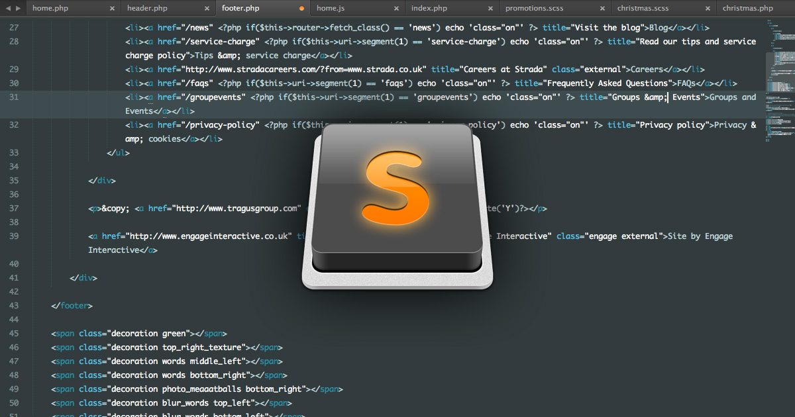

Editor de texto que emula interfaz y principales caracteristicas de los mejores programas que se utilizan para programar cuenta con varias herramientas que ayudan a la hora de programa, pero algunas veces pueden ser dificil de saber como funcionan todas
